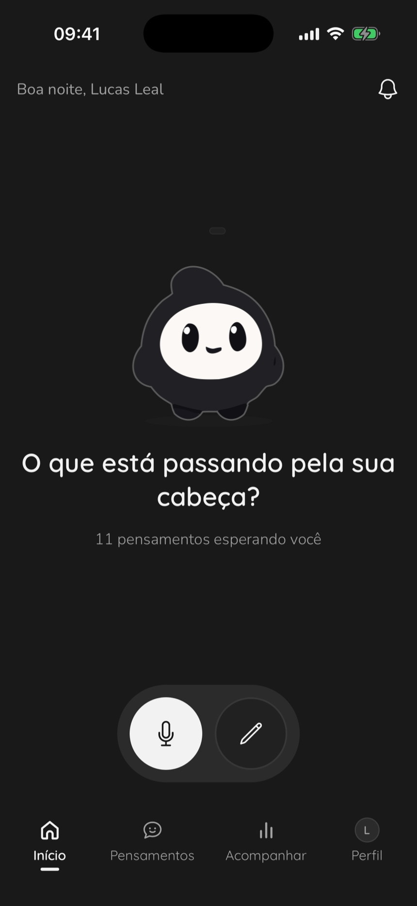
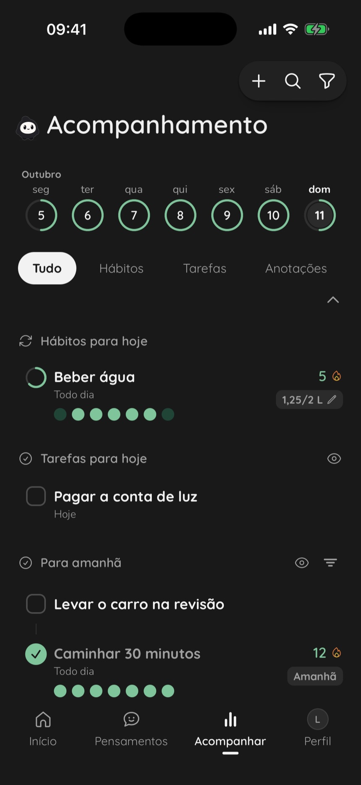

Fale ou escreva o pensamento
O texto aparece enquanto você fala. Um toque e está guardado.

Grátis para iPhone e Android
Fale ou escreva o que passou pela cabeça. O Think Capture guarda, lembra na hora certa e ajuda a transformar cada pensamento em tarefa, hábito ou anotação.
Só precisa saber onde anotar e encontrar.
O texto aparece enquanto você fala. Um toque e está guardado.

Cada pensamento vira tarefa, hábito ou anotação, com lembrete.
As tarefas de hoje e os hábitos com os dias seguidos.

O Kiro lê a sua caixa de entrada, sugere um destino para cada pensamento e junta o que se repete. Nada muda sem o seu toque.
Só funciona se você ligar, e o texto não é usado para treinar a IA. No Grátis, 1 vez por semana; no Pro, quando quiser.
Ler como cuidamos dos dados5 pensamentos, 2 assuntos
Um lembrete por item. Se quiser, ele toca como alarme, mesmo no silencioso.
Meio copo também conta: o dia enche até a meta, e a sequência cresce.
Capturar, organizar e acompanhar são grátis para sempre. Os dois planos sincronizam entre aparelhos.
Para criar o hábito de tirar da cabeça
R$ 0
Baixar para AndroidPara quem já não larga mais
R$ 22,99por mês, ou R$ 219,90 por ano
Baixar para iPhoneNão. O áudio nunca é guardado nem enviado: do pensamento falado fica só o texto.
Para guardar, precisa de internet. Sem rede, o texto fica na tela até você tentar de novo.
Sim. Entre com a mesma conta e os pensamentos são os mesmos nos dois.
Pela loja onde assinou. Se cancelar nos 7 dias do teste, não paga nada.
Sim, pelo Perfil do app. A conta e tudo o que você guardou saem de vez.